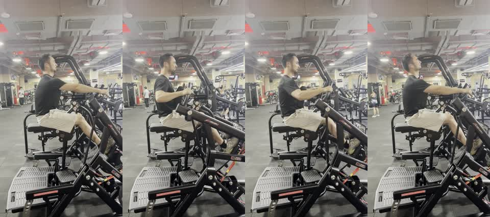

开肘划船关键画面

报告应把开肘划船和普通低位划船区分开。这个动作更看肘部偏高路线、上背收缩和肩颈是否放松，而不是把手柄拉得越低越好。
如果顶端靠后仰或耸肩换距离，训练重点就会从上背转移到躯干和肩颈代偿。报告应把这个风险讲具体。
下次口令：肘沿偏高路线向后，肩膀离耳朵远；顶端停半秒，身体别后仰抢距离。
这段视频用于测试小鱼教练能否识别开肘划船的训练目标。报告应重点看肘部是否保持偏高路线、肩膀是否远离耳朵、躯干是否稳定、手柄路径是否符合上背训练目标。
斜前方机位适合同时看躯干、肘路和手柄路径；如果要进一步看背部左右对称，可以补背后机位。
| 安全项 | 优先级 | 本次判断 | 处理建议 |
|---|---|---|---|
| 肩颈代偿 | 🟡 | 报告应检查顶端是否耸肩、脖子是否缩起来。 | 提示肘高但肩低，肩膀离耳朵远一点。 |
| 躯干稳定 | 🟡 | 报告应检查是否用后仰完成末端。 | 末端停半秒，身体不往后补距离。 |
| 动作目标匹配 | 🟢 | 开肘划船应被识别为偏上背动作，不应被写成普通低位划船。 | 手柄路径和肘路要服务于上背，而不是追求拉得更低。 |
| 动作 | 代表画面 | 报告应覆盖 | 不应过度判断 |
|---|---|---|---|
| 开肘划船 | preview_contact_sheet.jpg | 肘路、肩颈位置、躯干稳定、手柄路径、上背目标 | 从斜前方机位断言背部左右完全对称 |

报告应把开肘划船和普通低位划船区分开。这个动作更看肘部偏高路线、上背收缩和肩颈是否放松，而不是把手柄拉得越低越好。
如果顶端靠后仰或耸肩换距离，训练重点就会从上背转移到躯干和肩颈代偿。报告应把这个风险讲具体。
This sample should produce an open-elbow row assessment focused on elbow path, shoulder position, trunk stability, handle path, and upper-back emphasis.
The report should not treat this movement as a regular low row. It should recommend keeping the front-oblique angle and adding a rear view only when back symmetry is the main question.